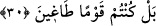

(Uyanlar, uydukları adamlara), reislere yahut kâfirler akranlarına: “Siz bize” dünyada
“sağdan” kuvvet ve icbarla yahut hak üzere olduğunuza yemin ederek “gelirdiniz”,
‘bizi azgınlık ve sapıklığa zorlardınız. Binaenaleyh biz sizin kahır ve kuvvetinizden
korkarak size uyduk’ yahut ‘bize hak üzere olduğuna yemin ettiğiniz için size güvendik
ve sizi tasdik ettik; sonuçta siz bizi yoldan saptırdınız’ “derler.”
Âyette geçen “yemîn” kelimesiyle ilgili -yukarıda da işaret edildiği gibi- iki tefsir
vardır. Birinci tefsirle ilgili olarak el-Müfredat’ta der ki: “Burada “kuvvet”, yemîn (sağ
el) olarak ifade edilmiştir. Kuvvetin sebebi olan “sağ el” zikredilmiş ve müsebbip olan
“kuvvet” kastedilmiştir. Zira sağ el kahır ve kuvvet sebebidir. Çoğu işler sağ el ile
yapılır.” Buna göre mânâ şöyledir: Bizi kuvvet ve zor kullanarak hak yoldan çevirdiniz,
sizden korktuğumuz için size tâbi olduk, derler. İkinci tefsir ise Fethu’r-Rahmân’da
geçer ki, buradaki “yemîn” kelimesi, “yemin etmek” mânâsındadır. Mânâ şöyledir: Biz,
yemin ettiğiniz için size güvendik ve sizi tasdik ettik; sonuçta siz bizi yoldan saptırdınız,
derler. Ancak el-İrşâd’da kaydedildiğine göre birinci tefsir, bir sonraki âyette gelecek
olan cevaba daha uygundur.
Denilir ki, şeytan sağ taraftan geldiği kişiye hak ve doğruyu karıştırmak için din
cihetinden gelir. Sol taraftan yaklaştığı kişiye de nefsâni ve şehevî açıdan gelir. Önden
geldiğine kıyameti yalanlama açısından gelir. Arkadan geldiği kimseye kendisine ve
nesline fakirlik endişesi vererek yaklaşır. Artık bu kimse ne bir hısım ve akrabasını
ziyaret eder, ne de zekat verir. Âyette iki şeye işaret edilmektedir. Birincisi şudur:
Dünya ehlinin âdeti birbirlerini suçlayıp kendilerini temize çıkarmaktır. Onlar
kendilerine reva görmediklerini dostlarına reva görürler. Din ehlinin himmeti ise şudur:
Din ehli dost ve kardeşlerinin suç ve günahlarını da kendi üzerlerine alıp dost ve
kardeşlerini suç ve günah töhmetinden ibrâ ederler. Hep kendilerini suçlu görürler. İşte
İsâ (a.s.) bir adamın bir şey çaldığını görür ve ona: “Sen bunu çaldın mı?” diye sorar.
Adam: “Hayır, kendisinden başka ilah olmayan Allah’a yemin olsun ki ben bir şey
çalmadım” der. Bu sefer İsâ (a.s.) adama: “Sen doğru söylüyorsun, benim gözlerim
yalan söylüyor” der.
İkincisi gerçek mü’mini hiç kimse saptırmaya muktedir olamaz. İmanı da taklîdî olan
bir kişi ise bid’at ve hevâ ehlinin saptırmasıyla sapar. En ufak bir şüpheyle imanı gider.
İşte gelecek cevapta onların mü’min olmadıklarını ifade etmekle Allah Teâlâ buna işaret
etmektedir.
29, 30. (Ötekiler de:) «Bilâkis, derler, siz inanan kimseler değildiniz. Bizim sizi